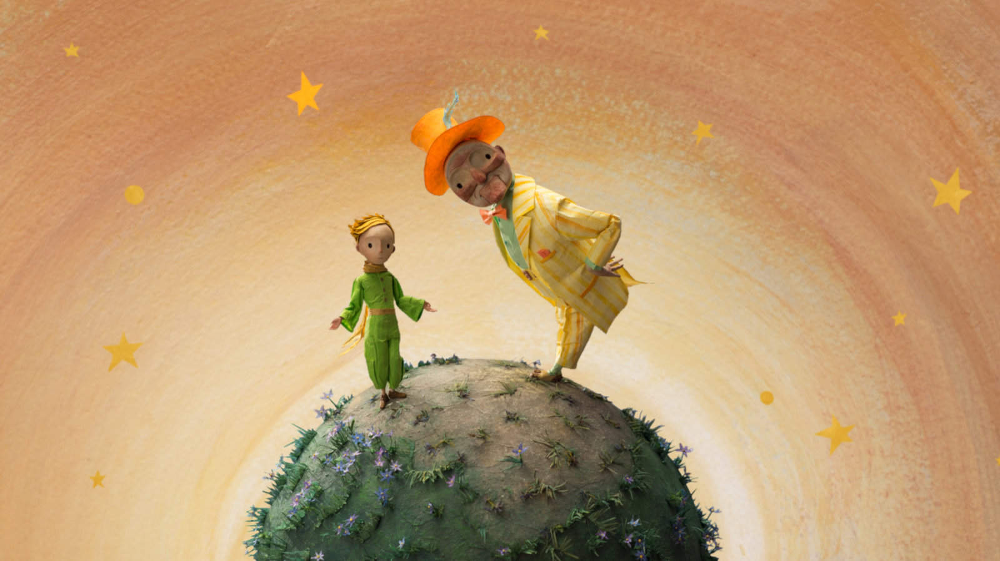
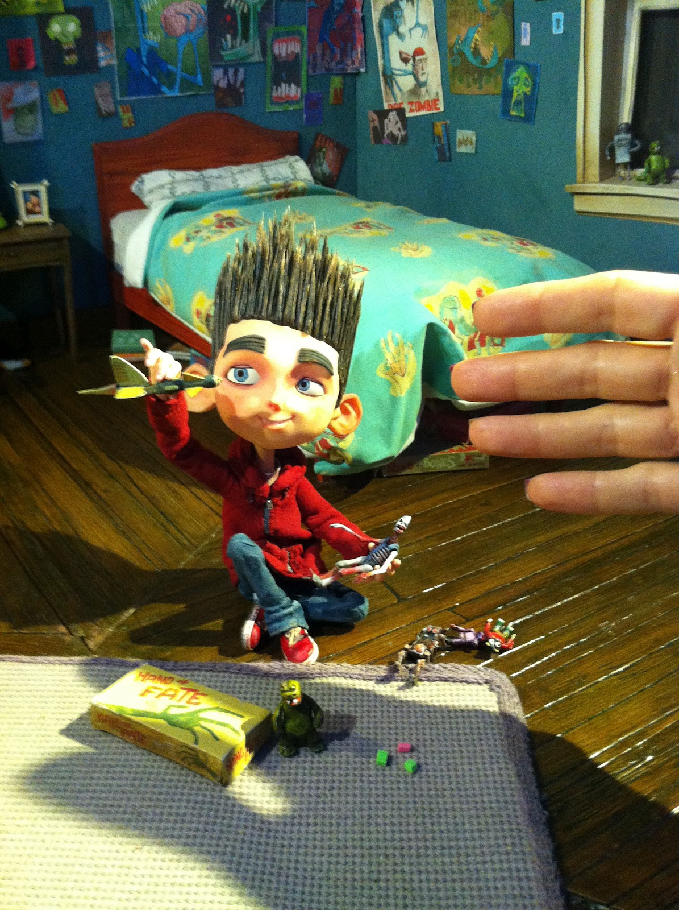
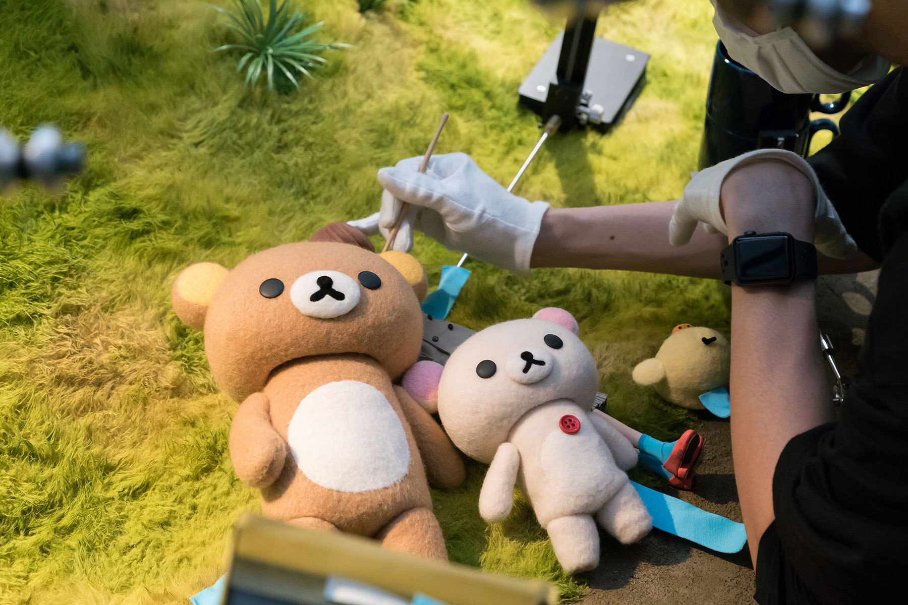

FILMS
.gif)
Ahora es momento de recomendar algunos films maravillosos realizados con esta técnica espectacular que requiere tanto tiempo y esfuerzo que es necesario que sean reconocidas y apreciadas.
-Iniciemos este recorrido con una historia clásica que todos hemos escuchado o leído en algún momento, The Little Prince.
Es una adaptación del libro El Principito, novela del autor Saint-Exupéry, adaptación hecha por Netflix. En este caso se centra en la historia de una niña con una crianza un poco estricta hasta que conoce a su vecino, el Aviador, cuyo personaje le presenta a la niña a nuestro personaje favorito, El Principito. Esta es una versión llena de creatividad, donde se reflejan distintos estilos de animación hasta la usada técnica de STOP MOTION.
-Proseguimos con una historia más fantasmal y de zombis que buscan tus cerebros, ParaNorman. Esta película se centra en la vida de Norman, el cual puede hablar con los muertos y gracias a este don el pueblo termina recurriendo a este chico cuando este se ve asediado por los zombis. Este film fue producido por Laika Studios.
-Por último, veremos una historia acerca de la vida mundana de Kaoru, donde como todos en su día y día es probable que tengamos bajones, pero que al final gracias a Kilakkuma y sus amigos es posible volver a encontrar el optimismo de las cosas. Esta serie se llama Kilakkuma y Kaoru. Este film fue producido por el estudio Dwarf.
|  |
Universidad Centroamericana 2021- Trabajo para asignación Digital 3 - Andrea Guevara